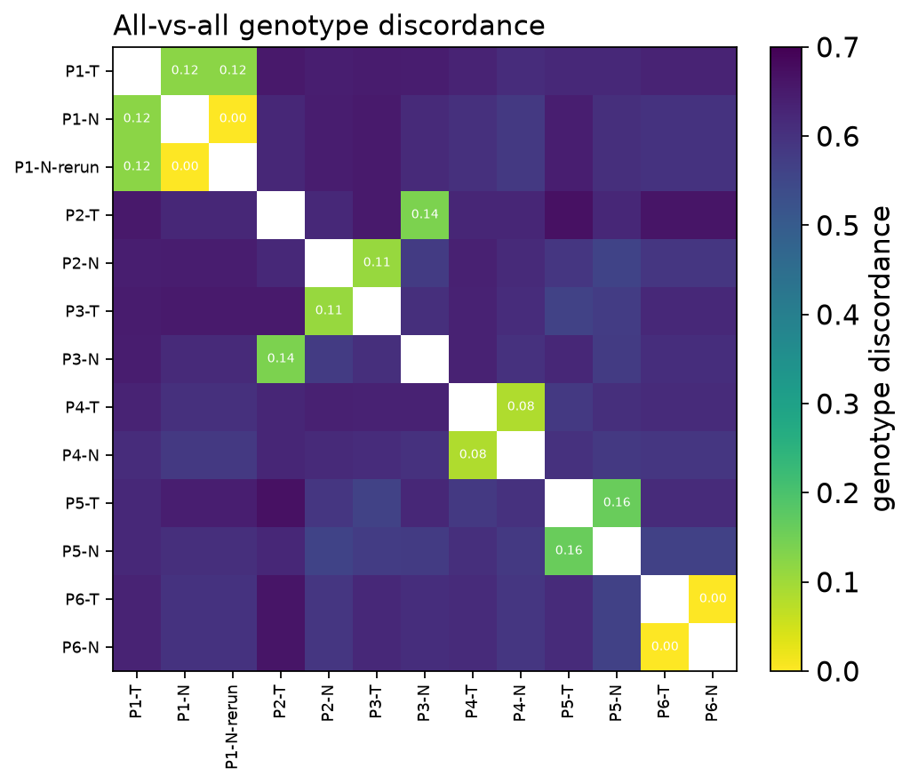
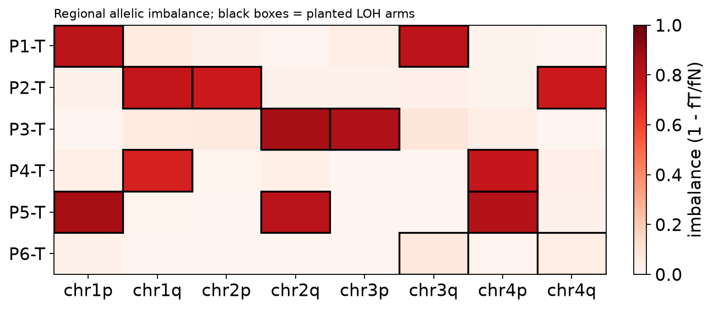

Tumour / normal sample QC from aligned reads at a SNP panel#
Identity, contamination, tumour-in-normal and tumour content — before any variant is called
A paired tumour / normal sequencing batch can be wrong in ways that no downstream caller will notice. Somatic calling assumes that the normal belongs to the same person as the tumour, that neither library carries DNA of another sample, that the normal is free of tumour cells, and that the tumour actually contains tumour. When one of these assumptions breaks:
a sample swap (the wrong normal submitted with a tumour) turns thousands of germline SNPs into false “somatic” mutations;
cross-sample contamination at a few percent creates low-VAF artefacts that look like sub-clonal mutations;
tumour-in-normal (TiN) contamination — tumour cells in the “normal” blood or adjacent tissue — makes the caller reject real somatic mutations because they are also seen in the normal;
a low-tumour-content biopsy yields a flat profile and a false “no driver found” result.
All four can be settled from one cheap measurement: the read counts of the reference and alternative allele at a panel of common germline SNPs. At each site a diploid sample is homozygous (allele fraction ≈ 0 or 1) or heterozygous (≈ 0.5); deviations from these three states, and agreement between samples, carry the whole QC signal:
Question |
Signal at the SNP panel |
Function |
|---|---|---|
Do two files come from the same person? |
genotype discordance between samples |
|
Is a library contaminated, and by whom? |
minority-allele reads at its homozygous sites that follow another sample’s genotype |
|
Has the tumour lost an allele (LOH), how pure is it? |
folded allele fraction of the tumour vs the normal at normal-heterozygous sites |
|
Does the normal contain tumour? |
the normal’s heterozygous AF shifted toward the tumour’s retained allele inside the tumour’s LOH regions |
|
Is a library technically odd? |
read length / MAPQ / duplicate / modified-base batch z-scores |
|
All of the above, one row per finding |
|
The starting point is ov.genetics.snp_allele_counts, a pysam pileup
of every BAM/CRAM at the panel. Nothing in the chain is tied to a
platform or panel: every cut-off is a genotype-state definition or a
significance level.
What this tutorial does. Real tumour/normal BAMs are controlled access, so we simulate a small but realistic batch inside the notebook: a reference genome, a 600-SNP targeted panel, and 13 aligned BAM files (6 patients × tumour/normal plus one re-sequenced library). We plant six problems with a known answer, run the QC chain, and check every finding against the truth.
import os
import numpy as np
import pandas as pd
import matplotlib.pyplot as plt
import pysam
import omicverse as ov
ov.plot_set()
rng = np.random.default_rng(2024)
print('pysam', pysam.__version__)
🔬 Starting plot initialization...
🧬 Detecting GPU devices…
🚫 PyTorch not available - GPU detection skipped
____ _ _ __
/ __ \____ ___ (_)___| | / /__ _____________
/ / / / __ `__ \/ / ___/ | / / _ \/ ___/ ___/ _ \
/ /_/ / / / / / / / /__ | |/ / __/ / (__ ) __/
\____/_/ /_/ /_/_/\___/ |___/\___/_/ /____/\___/
🔖 Version: 2.3.2 📚 Tutorials: https://omicverse.readthedocs.io/
✅ plot_set complete.
pysam 0.23.3
1. Simulate a reference, a SNP panel and target intervals#
The panel mimics a typical sample-tracking / identity panel (e.g. the
NGSCheckMate or Conpair site lists): common bi-allelic SNPs
(minor-allele frequency 0.2–0.5, so most individuals differ at many of
them) spread over several chromosomes. We use four 60-kb “chromosomes”,
each with two target intervals (a p and a q arm) of 75 SNPs spaced
250 bp apart. The arms are the regions in which allelic imbalance is
summarised later, exactly like arm-level copy-number segments.
outdir = 'sampleqc_data'
os.makedirs(f'{outdir}/bams', exist_ok=True)
CHROMS = ['chr1', 'chr2', 'chr3', 'chr4']
SPACING, N_PER_ARM, FLANK, GAP = 250, 75, 2000, 5000
arm_len = SPACING * N_PER_ARM
REF, site_rows, bed_rows = {}, [], []
for c in CHROMS:
L = 2 * FLANK + 2 * arm_len + GAP
REF[c] = ''.join(rng.choice(list('ACGT'), L))
for k, arm in enumerate(['p', 'q']):
start = FLANK + k * (arm_len + GAP)
bed_rows.append((c, start, start + arm_len, f'{c}{arm}'))
for j in range(N_PER_ARM):
pos = start + j * SPACING + SPACING // 2 # 1-based position
ref = REF[c][pos - 1]
alt = rng.choice([b for b in 'ACGT' if b != ref])
site_rows.append((c, pos, ref, alt, f'{c}{arm}'))
sites = pd.DataFrame(site_rows, columns=['chrom', 'pos', 'ref', 'alt', 'region'])
targets = pd.DataFrame(bed_rows, columns=['chrom', 'start', 'end', 'name'])
# population allele frequency of the ALT allele: common SNPs, ALT minor or major at random
maf = rng.uniform(0.2, 0.5, len(sites))
sites['pop_alt_freq'] = np.where(rng.random(len(sites)) < 0.5, maf, 1 - maf)
# write the reference, the panel VCF (bgzipped + tabix) and the BED, as a real pipeline would have them
with open(f'{outdir}/ref.fa', 'w') as fh:
for c in CHROMS:
fh.write(f'>{c}\n' + '\n'.join(REF[c][i:i + 60] for i in range(0, len(REF[c]), 60)) + '\n')
pysam.faidx(f'{outdir}/ref.fa')
with open(f'{outdir}/panel.vcf', 'w') as fh:
fh.write('##fileformat=VCFv4.2\n')
for c in CHROMS:
fh.write(f'##contig=<ID={c},length={len(REF[c])}>\n')
fh.write('##INFO=<ID=AF,Number=A,Type=Float,Description="Population ALT frequency">\n')
fh.write('#CHROM\tPOS\tID\tREF\tALT\tQUAL\tFILTER\tINFO\n')
for r in sites.itertuples():
fh.write(f'{r.chrom}\t{r.pos}\trs{r.Index:05d}\t{r.ref}\t{r.alt}\t.\tPASS\tAF={r.pop_alt_freq:.3f}\n')
pysam.tabix_index(f'{outdir}/panel.vcf', preset='vcf', force=True)
targets.to_csv(f'{outdir}/targets.bed', sep='\t', header=False, index=False)
print(f'{len(sites)} panel SNPs in {len(targets)} target intervals on {len(CHROMS)} contigs')
targets
600 panel SNPs in 8 target intervals on 4 contigs
chrom start end name
0 chr1 2000 20750 chr1p
1 chr1 25750 44500 chr1q
2 chr2 2000 20750 chr2p
3 chr2 25750 44500 chr2q
4 chr3 2000 20750 chr3p
5 chr3 25750 44500 chr3q
6 chr4 2000 20750 chr4p
7 chr4 25750 44500 chr4q
2. Simulate six patients — and plant six problems#
Each of six individuals I1–I6 gets germline genotypes drawn from the
panel allele frequencies (Hardy–Weinberg). Each tumour has
copy-neutral loss of heterozygosity (LOH) on two or three arms — at
every heterozygous SNP of those arms the tumour cells keep one allele —
and a purity (fraction of tumour cells); the remaining cells are
normal, so the tumour library’s allele fraction is
purity × tumour-cell AF + (1 − purity) × germline AF.
Then the batch is broken, on purpose, in six ways:
Planted problem |
Truth |
|---|---|
Sample swap |
the files submitted as |
Cross-sample contamination |
|
Tumour-in-normal |
|
Low tumour content |
|
Same-individual duplicate |
|
Library outlier |
|
P1 is the clean control: correct pairing, no contamination, purity 0.8.
inds = [f'I{i}' for i in range(1, 7)]
germ = {i: rng.binomial(2, sites['pop_alt_freq'].values) / 2 for i in inds} # 0, 0.5, 1
LOH = {'I1': ['chr1p', 'chr3q'], 'I2': ['chr2p', 'chr4q', 'chr1q'], 'I3': ['chr3p', 'chr2q'],
'I4': ['chr4p', 'chr1q'], 'I5': ['chr1p', 'chr2q', 'chr4p'], 'I6': ['chr3q', 'chr4q']}
PURITY = {'I1': 0.80, 'I2': 0.75, 'I3': 0.85, 'I4': 0.80, 'I5': 0.85, 'I6': 0.15}
tumour_af = {}
for i in inds:
cell = germ[i].copy()
loh = sites['region'].isin(LOH[i]).values & (germ[i] == 0.5)
cell[loh] = rng.choice([0.0, 1.0], loh.sum()) # retained allele per LOH locus
tumour_af[i] = PURITY[i] * cell + (1 - PURITY[i]) * germ[i]
# what DNA is really inside each file: {(tissue, individual): fraction}
COMPOSITION = {
'P1-T': {('T', 'I1'): 1.0}, 'P1-N': {('N', 'I1'): 1.0}, 'P1-N-rerun': {('N', 'I1'): 1.0},
'P2-T': {('T', 'I2'): 1.0}, 'P2-N': {('N', 'I3'): 1.0}, # swapped normal
'P3-T': {('T', 'I3'): 1.0}, 'P3-N': {('N', 'I2'): 1.0}, # swapped normal
'P4-T': {('T', 'I4'): 0.95, ('N', 'I6'): 0.05}, # 5 % P6-N contamination
'P4-N': {('N', 'I4'): 1.0},
'P5-T': {('T', 'I5'): 1.0}, 'P5-N': {('N', 'I5'): 0.90, ('T', 'I5'): 0.10}, # tumour-in-normal
'P6-T': {('T', 'I6'): 1.0}, 'P6-N': {('N', 'I6'): 1.0}, # P6-T purity 0.15
}
READ_LEN = {s: rng.normal(145, 4) for s in COMPOSITION}
READ_LEN['P4-N'] = 75.0 # degraded library
DEPTH = {s: 70 * np.exp(rng.normal(0, 0.15)) for s in COMPOSITION} # library-to-library depth
def true_af(sample):
return sum(f * (tumour_af[i] if t == 'T' else germ[i]) for (t, i), f in COMPOSITION[sample].items())
manifest = pd.DataFrame({'case_id': [f'P{i}' for i in range(1, 7)],
'tumor_alias': [f'P{i}-T' for i in range(1, 7)],
'submitted_baseline_alias': [f'P{i}-N' for i in range(1, 7)]})
manifest
case_id tumor_alias submitted_baseline_alias
0 P1 P1-T P1-N
1 P2 P2-T P2-N
2 P3 P3-T P3-N
3 P4 P4-T P4-N
4 P5 P5-T P5-N
5 P6 P6-T P6-N
Now write one coordinate-sorted, indexed BAM per sample. At every panel
SNP the depth is Poisson with a library-specific mean (lognormal around
70×, a typical targeted-panel depth, since real libraries never get
identical yields); each read
is 40–200 bp, placed so that it covers the SNP, carries the ALT allele
with probability equal to the sample’s true allele fraction, and has a
0.3 % sequencing-error rate at the SNP base. Reads are real
pysam.AlignedSegment records with MAPQ 60, so the QC functions read
them exactly as they would read a production BAM.
QUAL = pysam.qualitystring_to_array('I' * 220)
def write_bam(sample, err=0.003):
af, mu, depth = true_af(sample), READ_LEN[sample], DEPTH[sample]
path = f'{outdir}/bams/{sample}.bam'
header = {'HD': {'VN': '1.6', 'SO': 'coordinate'},
'SQ': [{'SN': c, 'LN': len(REF[c])} for c in CHROMS],
'RG': [{'ID': sample, 'SM': sample}]}
n_reads = 0
with pysam.AlignmentFile(path, 'wb', header=header) as bam:
for tid, c in enumerate(CHROMS):
seq = REF[c]
sub = sites.index[sites['chrom'] == c]
for idx in sub:
pos, ref, alt, p = sites.at[idx, 'pos'], sites.at[idx, 'ref'], sites.at[idx, 'alt'], af[idx]
n = rng.poisson(depth)
L = np.clip(np.rint(rng.normal(mu, 15, n)), 40, 200).astype(int)
start = pos - 1 - (rng.random(n) * L).astype(int) # read covers the SNP
is_alt = rng.random(n) < p
is_err = rng.random(n) < err
rev = rng.random(n) < 0.5
for r in np.argsort(start, kind='stable'):
s, l = int(start[r]), int(L[r])
b = alt if is_alt[r] else ref
if is_err[r]:
b = rng.choice([x for x in 'ACGT' if x != b])
off = pos - 1 - s
a = pysam.AlignedSegment()
a.query_name = f'{sample}:{c}:{pos}:{r}'
a.query_sequence = seq[s:s + off] + b + seq[s + off + 1:s + l]
a.flag = 16 if rev[r] else 0
a.reference_id, a.reference_start = tid, s
a.mapping_quality = 60
a.cigartuples = [(0, l)]
a.query_qualities = QUAL[:l]
a.set_tag('RG', sample)
bam.write(a)
n_reads += 1
pysam.index(path)
return n_reads
for s in COMPOSITION:
n = write_bam(s)
print(f'wrote {len(COMPOSITION)} BAMs, e.g. {s}: {n:,} reads')
sorted(os.listdir(f'{outdir}/bams'))[:4]
wrote 13 BAMs, e.g. P6-N: 47,773 reads
['P1-N-rerun.bam', 'P1-N-rerun.bam.bai', 'P1-N.bam', 'P1-N.bam.bai']
3. Allele counts at the panel — snp_allele_counts#
snp_allele_counts piles up every alignment file at every bi-allelic
panel SNP and counts one observation per read (overlapping mates are
not double-counted), after MAPQ / base-quality filters, secondary /
supplementary / QC-fail / duplicate reads removed. Each SNP gets the name
of the target interval that contains it as region_id. It accepts a
{sample: path} mapping, a list of paths, or — as here — a directory of
indexed BAMs (sample name = file stem), and the panel as a VCF or a
DataFrame. n_jobs counts files in parallel processes.
counts = ov.genetics.snp_allele_counts(f'{outdir}/bams', f'{outdir}/panel.vcf.gz',
targets=f'{outdir}/targets.bed',
min_mapq=20, min_baseq=10, n_jobs=2)
print(counts.shape, '| input checks:', counts.attrs['input_checks'])
counts.head()
(7800, 12) | input checks: []
sample chrom pos ref alt region_id ref_count alt_count \
0 P1-N-rerun chr1 2125 C G chr1p 0 68
1 P1-N-rerun chr1 2375 A G chr1p 36 32
2 P1-N-rerun chr1 2625 T G chr1p 74 0
3 P1-N-rerun chr1 2875 G A chr1p 50 52
4 P1-N-rerun chr1 3125 C G chr1p 32 51
other_count depth alt_fraction in_target
0 0 68 1.000000 True
1 0 68 0.470588 True
2 0 74 0.000000 True
3 0 102 0.509804 True
4 0 83 0.614458 True
counts.groupby('sample')['depth'].describe()[['mean', 'min', '50%', 'max']].round(1).T
sample P1-N P1-N-rerun P1-T P2-N P2-T P3-N P3-T P4-N P4-T P5-N \
mean 87.3 77.0 70.1 82.3 55.8 78.4 53.3 67.3 88.0 60.2
min 61.0 51.0 47.0 56.0 34.0 54.0 34.0 47.0 62.0 42.0
50% 87.0 77.0 70.0 82.0 56.0 78.0 53.0 67.0 88.0 60.0
max 114.0 107.0 101.0 111.0 85.0 105.0 80.0 93.0 116.0 83.0
sample P5-T P6-N P6-T
mean 73.5 79.5 77.5
min 50.0 52.0 51.0
50% 73.0 79.0 77.0
max 100.0 110.0 105.0
One row per sample × SNP with ref_count, alt_count, other_count
(bases that are neither allele — sequencing error) and
alt_fraction = alt / (ref + alt). Median depth is 55–90× depending on the library;
input_checks is empty, i.e. every panel contig was found in every BAM
header (the function also tolerates chr1 vs 1 naming) and every file
was indexed.
The B-allele-frequency (BAF) plot — allele fraction along the panel —
is the picture all later steps formalise. A clean normal shows three
bands (0, 0.5, 1). The tumour P1-T keeps the bands except on its two LOH
arms, where the heterozygous band splits toward 0 and 1; the split is
not complete because 20 % of the tumour cells are normal.
def baf_plot(ax, sample, title=None):
d = counts[counts['sample'] == sample].reset_index(drop=True)
regs = d['region_id'].values
for k, r in enumerate(pd.unique(regs)):
idx = np.flatnonzero(regs == r)
ax.axvspan(idx[0] - 0.5, idx[-1] + 0.5, color='0.93' if k % 2 else 'white', zorder=0)
ax.text(idx.mean(), 1.06, r, ha='center', fontsize=7)
ax.scatter(d.index, d['alt_fraction'], s=3, c='#3a6ea5', lw=0)
ax.set_ylim(-0.05, 1.12); ax.set_xlim(-1, len(d))
ax.set_ylabel('ALT fraction'); ax.set_title(title or sample, loc='left', fontsize=10)
fig, axes = plt.subplots(2, 1, figsize=(10, 4.6), sharex=True, constrained_layout=True)
baf_plot(axes[0], 'P1-N', 'P1-N (normal)')
baf_plot(axes[1], 'P1-T', 'P1-T (tumour, purity 0.8, LOH on chr1p and chr3q)')
axes[1].set_xlabel('panel SNP (genome order)')
plt.show()

4. Library-level QC — bam_read_summary#
Before looking at genotypes, check that every library looks like its
batch. bam_read_summary reads the alignments inside the target
intervals and reports, per sample, primary read count, read-length
quantiles and N50, mean MAPQ, duplicate / secondary / supplementary
fractions and the fraction of reads carrying modified-base tags (MM/ML,
for nanopore / PacBio methylation calls). Each metric gets a robust
z-score (median / MAD across the batch, log scale for lengths and counts),
and |z| ≥ outlier_z (3.5) is listed in outliers. Robust statistics
matter here: one degraded library must not inflate the spread that is
used to detect it.
rs = ov.genetics.bam_read_summary(f'{outdir}/bams', targets=f'{outdir}/targets.bed')
rs[['sample', 'primary_reads', 'median_read_length', 'read_n50', 'mean_mapq',
'duplicate_fraction', 'z_median_read_length', 'outliers']].round(2)
sample primary_reads median_read_length read_n50 mean_mapq \
0 P1-N-rerun 46307 137.0 138.0 60.0
1 P1-N 52500 151.0 153.0 60.0
2 P1-T 42140 152.0 153.0 60.0
3 P2-N 49452 142.0 144.0 60.0
4 P2-T 33554 146.0 148.0 60.0
5 P3-N 47162 146.0 147.0 60.0
6 P3-T 32033 146.0 147.0 60.0
7 P4-N 40444 75.0 78.0 60.0
8 P4-T 52891 147.0 148.0 60.0
9 P5-N 36160 139.0 140.0 60.0
10 P5-T 44213 146.0 147.0 60.0
11 P6-N 47773 140.0 141.0 60.0
12 P6-T 46606 147.0 148.0 60.0
duplicate_fraction z_median_read_length \
0 0.0 -1.54
1 0.0 0.82
2 0.0 0.98
3 0.0 -0.67
4 0.0 0.00
5 0.0 0.00
6 0.0 0.00
7 0.0 -16.17
8 0.0 0.17
9 0.0 -1.19
10 0.0 0.00
11 0.0 -1.02
12 0.0 0.17
outliers
0
1
2
3
4
5
6
7 median_read_length(low, z=-16.2);read_n50(low,...
8
9
10
11
12
P4-N is the only flagged library: its median read length (~75 bp) is
many robust standard deviations below the batch (~145 bp) — the
signature of fragmented, e.g. FFPE-degraded, DNA. The other metrics are
constant across this simulated batch (MAPQ 60, no duplicates, no
modified-base tags), so their MAD is zero and no z-score is defined
(reported as 0). A library outlier is ancillary: it explains noisy
data but is not itself a genetic finding.
5. Who is who — sample_genotype_concordance#
Two libraries from the same person share their germline genotype at
every SNP; two unrelated people disagree at a large fraction of common
SNPs. sample_genotype_concordance calls a genotype state at every site
with depth ≥ min_depth (AF ≤ 0.15 hom-ref, ≥ 0.85 hom-alt, 0.30–0.70
het; anything in between is ambiguous and not compared, so LOH,
contamination and low purity do not create false calls) and computes the
discordance of every ordered pair. By default it keeps only
germline-informative sites (informative='shared'): sites where both
alleles are seen at clonal fraction in at least two samples, so that
tumour-private (somatic) alleles cannot mask identity.
Every sample’s comparators are ranked; a pair that is each other’s best
match is mutual_best (same individual), and gap_to_next measures how
clearly the best match beats the runner-up.
conc = ov.genetics.sample_genotype_concordance(counts)
print('germline-informative sites:', conc.attrs['n_informative_sites'])
conc[conc['rank'] == 1][['sample', 'comparator', 'n_compared', 'discordance',
'opposite_hom', 'mutual_best', 'gap_to_next']].round(3)
germline-informative sites: 588
sample comparator n_compared discordance opposite_hom \
0 P1-N P1-N-rerun 588 0.000 0
12 P1-N-rerun P1-N 588 0.000 0
24 P1-T P1-N 582 0.122 0
25 P1-T P1-N-rerun 582 0.122 0
36 P2-N P3-T 587 0.109 0
48 P2-T P3-N 560 0.139 0
60 P3-N P2-T 560 0.139 0
72 P3-T P2-N 587 0.109 0
84 P4-N P4-T 573 0.084 0
96 P4-T P4-N 573 0.084 0
108 P5-N P5-T 584 0.161 0
120 P5-T P5-N 584 0.161 0
132 P6-N P6-T 588 0.000 0
144 P6-T P6-N 588 0.000 0
mutual_best gap_to_next
0 True 0.122
12 True 0.122
24 False 0.000
25 False 0.000
36 True 0.449
48 True 0.480
60 True 0.439
72 True 0.453
84 True 0.500
96 True 0.501
108 True 0.397
120 True 0.401
132 True 0.565
144 True 0.565
order = [s for p in range(1, 7) for s in (f'P{p}-T', f'P{p}-N', f'P{p}-N-rerun') if s in COMPOSITION]
M = conc.pivot(index='sample', columns='comparator', values='discordance').reindex(index=order, columns=order)
fig, ax = plt.subplots(figsize=(6.4, 5.4), constrained_layout=True)
im = ax.imshow(M.values, cmap='viridis_r', vmin=0, vmax=0.7)
ax.set_xticks(range(len(order)), order, rotation=90, fontsize=8)
ax.set_yticks(range(len(order)), order, fontsize=8)
for i in range(len(order)):
for j in range(len(order)):
v = M.values[i, j]
if np.isfinite(v) and v < 0.2:
ax.text(j, i, f'{v:.2f}', ha='center', va='center', fontsize=6.5, color='white')
fig.colorbar(im, ax=ax, label='genotype discordance')
ax.set_title('All-vs-all genotype discordance', loc='left')
plt.show()
ind_of = {s: max(COMPOSITION[s].items(), key=lambda kv: kv[1])[0][1] for s in COMPOSITION} # true individual
same = conc['sample'].map(ind_of) == conc['comparator'].map(ind_of)
print('discordance, same individual : %.3f - %.3f' % (conc.loc[same, 'discordance'].min(), conc.loc[same, 'discordance'].max()))
print('discordance, different people : %.3f - %.3f' % (conc.loc[~same, 'discordance'].min(), conc.loc[~same, 'discordance'].max()))


discordance, same individual : 0.000 - 0.161
discordance, different people : 0.558 - 0.668
The heatmap is a block diagram of individuals. Unrelated pairs disagree at 56–67 % of the informative sites; same-person pairs at 0 (two normals) to ~0.16 (tumour vs normal — the residual comes from the LOH arms, where a tumour’s heterozygous sites look homozygous). The two ranges are separated by a wide gap, which is what makes identity calls safe. Three things stand out:
P1-T,P1-NandP1-N-rerunform one block — the re-sequenced library is recognised as the same individual (discordance ≈ 0 withP1-N), as planted;P2-TmatchesP3-N, andP3-TmatchesP2-N— not their own submitted normals: the swap;every other tumour is paired with its submitted normal.
6. Check the manifest — resolve_sample_relationships#
The concordance table says who matches whom; the manifest says who
should. resolve_sample_relationships checks every submitted
tumour / baseline record, reports the rank and discordance of the
submitted partner and the molecularly best comparator of each member,
and labels the record SUPPORTED (the submitted pair is the same
individual) or MISMATCH.
rel = ov.genetics.resolve_sample_relationships(conc, manifest, case_col='case_id',
a_col='tumor_alias', b_col='submitted_baseline_alias')
rel[['case_id', 'a', 'b', 'submitted_rank_for_a', 'submitted_discordance',
'best_for_a', 'best_for_a_discordance', 'best_for_b', 'status']].round(3)
case_id a b submitted_rank_for_a submitted_discordance best_for_a \
0 P1 P1-T P1-N 1 0.122 P1-N
1 P2 P2-T P2-N 2 0.620 P3-N
2 P3 P3-T P3-N 4 0.606 P2-N
3 P4 P4-T P4-N 1 0.084 P4-N
4 P5 P5-T P5-N 1 0.161 P5-N
5 P6 P6-T P6-N 1 0.000 P6-N
best_for_a_discordance best_for_b status
0 0.122 P1-N-rerun SUPPORTED
1 0.139 P3-T MISMATCH
2 0.109 P2-T MISMATCH
3 0.084 P4-T SUPPORTED
4 0.161 P5-T SUPPORTED
5 0.000 P6-T SUPPORTED
Cases P2 and P3 are MISMATCH: the submitted normal ranks far down
the list for its tumour (discordance ~0.5, i.e. an unrelated person),
and the proposed repairs (best_for_a, best_for_b) are exactly the
planted swap — P2-T ↔ P3-N and P3-T ↔ P2-N. In practice this is
where you stop and fix the sample sheet: every somatic call of P2 and
P3 made against the submitted normals would be germline noise. The
downstream checks below use the repaired pairing automatically.
P1 — the clean control — is SUPPORTED, although the batch holds
two libraries of its normal. That is not automatic: P1-N and
P1-N-rerun are each other’s best match (discordance 0), and P1-T
ties between them, so P1-T is the mutual best match of neither.
Same-individual groups therefore start from mutual-best pairs and then
merge groups that are each other’s nearest group if their closest
pair’s opposite-homozygote count fits the same-individual error rate
rather than the rate expected between unrelated people (a binomial
likelihood ratio; LOH never creates an opposite homozygote, unrelated
people do). So {P1-N, P1-N-rerun} and P1-T are joined, while a
sample whose own partner is missing is not pulled into its nearest,
unrelated group. Any number of libraries per individual works the same
way.
Two libraries of the same sample still have to be pooled before
per-sample analyses (contamination, imbalance, somatic calling): a re-run
of P1-N would otherwise be fitted as a “source” of P1-N itself.
tumor_normal_batch_qc (section 10) does this for you; for the
step-by-step sections we pool by hand, which is a sum of the allele
counts per site:
key = ['sample', 'chrom', 'pos', 'ref', 'alt', 'region_id', 'in_target']
pooled = counts.assign(sample=counts['sample'].replace({'P1-N-rerun': 'P1-N'}))
counts_qc = pooled.groupby(key, as_index=False, sort=False)[['ref_count', 'alt_count', 'other_count', 'depth']].sum()
counts_qc['alt_fraction'] = counts_qc['alt_count'] / counts_qc['depth'].where(counts_qc['depth'] > 0)
counts_qc = counts_qc[counts.columns]
conc = ov.genetics.sample_genotype_concordance(counts_qc)
rel = ov.genetics.resolve_sample_relationships(conc, manifest)
rel[['case_id', 'a', 'b', 'submitted_discordance', 'best_for_a', 'best_for_b', 'status']].round(3)
case_id a b submitted_discordance best_for_a best_for_b status
0 P1 P1-T P1-N 0.120 P1-N P1-T SUPPORTED
1 P2 P2-T P2-N 0.621 P3-N P3-T MISMATCH
2 P3 P3-T P3-N 0.608 P2-N P2-T MISMATCH
3 P4 P4-T P4-N 0.084 P4-N P4-T SUPPORTED
4 P5 P5-T P5-N 0.161 P5-N P5-T SUPPORTED
5 P6 P6-T P6-N 0.000 P6-N P6-T SUPPORTED
With one P1-N (now at twice the depth) the relationships are the
same: P1 is SUPPORTED and the only mismatches are the planted swap.
From here on we work with the pooled table counts_qc.
7. Cross-sample contamination — estimate_cross_sample_contamination#
At a site where a sample is homozygous, every read of the other allele is either a sequencing error or foreign DNA. If the foreign DNA comes from a sample of the same batch, those minority reads appear preferentially at the sites where that sample carries the allele. The function turns that into a model: at each affected sample’s homozygous-like sites (minor AF < 0.25, depth ≥ 8) the minority count is
where \(s_{S,i}\) is the frequency of that allele in candidate source \(S\) and \(\varepsilon\) is the background error. All sources are fitted jointly (maximum likelihood); each source’s evidence is the likelihood ratio of dropping it, corrected for over-dispersion and Bonferroni-corrected over all ordered pairs. Sites whose minority allele no batch sample carries (somatic variants, artefacts) are removed from the fit. This is the batch-internal analogue of VerifyBamID’s population mixture model, and it names the source, not only the fraction.
Two options make it tumour-aware (the batch QC in section 10 sets them
for you): genotype_reference restricts a tumour’s sites to loci that are
homozygous in its individual (tumour and matched normal), so LOH
loci, where the residual minority reads are the tumour’s own normal
cells, do not confound a foreign source; groups tests a foreign
individual’s samples together, because a person’s tumour and normal are
genetically collinear as sources.
samples_qc = sorted(counts_qc['sample'].unique())
groups = {s: [x for x in samples_qc if x.split('-')[0] == s.split('-')[0]] for s in samples_qc}
# the swap is repaired: the normal that is really P2's is the P3-N file, and vice versa
groups.update({'P2-T': ['P2-T', 'P3-N'], 'P3-N': ['P2-T', 'P3-N'],
'P3-T': ['P3-T', 'P2-N'], 'P2-N': ['P3-T', 'P2-N']})
gref = {'P1-T': ['P1-N'], 'P2-T': ['P3-N'], 'P3-T': ['P2-N'],
'P4-T': ['P4-N'], 'P5-T': ['P5-N'], 'P6-T': ['P6-N']}
cont = ov.genetics.estimate_cross_sample_contamination(counts_qc, genotype_reference=gref, groups=groups)
cols = ['affected', 'source', 'fraction', 'lr', 'p_adj', 'called', 'informative_sites',
'hit_sites', 'private_markers', 'source_individual']
cont[cols].head(8).round(4)
affected source fraction lr p_adj called informative_sites \
0 P4-T P6-T 0.0468 460.8300 0.0000 True 218
1 P4-T P6-N 0.0463 460.8300 0.0000 False 218
2 P4-N P2-N 0.0018 14.2222 0.0107 False 213
3 P4-N P3-T 0.0020 14.2222 0.0107 False 187
4 P1-T P2-N 0.0014 5.9274 0.9839 False 216
5 P1-T P3-T 0.0012 5.9274 0.9839 False 196
6 P5-N P1-N 0.0015 5.5844 1.0000 False 206
7 P5-N P1-T 0.0014 5.5844 1.0000 False 179
hit_sites private_markers source_individual
0 196 0 P6-N,P6-T
1 196 0 P6-N,P6-T
2 21 1 P2-N,P3-T
3 21 0 P2-N,P3-T
4 21 1 P2-N,P3-T
5 19 0 P2-N,P3-T
6 19 0 P1-N,P1-T
7 17 0 P1-N,P1-T
Reading the table:
The only foreign call is
P4-T ← P6-Nat an estimated fraction close to the planted 5 %, with an enormous likelihood ratio and minority reads at most of the loci whereP6-Ncarries the allele that individual 4 lacks (hit_sites/informative_sites).source_individuallistsP6-N,P6-T: the two samples of individual 6 are tested together (one likelihood ratio for the individual), and the call goes to the member whose single-source fit is best; the other is reported, uncalled, as an alternate. Here the two fit equally well — at purity 0.15P6-Tis genetically almost a normal — so the attribution within individual 6 is a coin toss, while the attribution to individual 6 is unambiguous. The planted source wasP6-N; read thecomparisoncolumn of the batch review as “this person”, not “this file”.No tumour is “contaminated” by its own normal, although every tumour here contains 15–25 % normal cells. That is the effect of
genotype_reference: at loci homozygous in the individual the normal cells add no minority allele. Without it, the LOH loci (where the tumour looks homozygous but its normal cells still carry the lost allele) would make the tumour’s own normal look like a source — that is tumour content, not contamination, andtumor_normal_batch_qcnever reports it as contamination.
The figure shows the raw evidence: at loci homozygous in individual 4,
the minority-allele fraction of P4-T grouped by the genotype of P6-N
at that allele.
wide_af = counts_qc.pivot_table(index=['chrom', 'pos'], columns='sample', values='alt_fraction')
wide_dp = counts_qc.pivot_table(index=['chrom', 'pos'], columns='sample', values='depth')
g4 = wide_af[['P4-T', 'P4-N']].mean(1)
hom4 = ((wide_af['P4-N'] < 0.1) | (wide_af['P4-N'] > 0.9)) & (wide_dp['P4-T'] >= 8)
minor_alt = g4 < 0.5
minor_T = np.where(minor_alt, wide_af['P4-T'], 1 - wide_af['P4-T'])[hom4]
src_state = np.where(minor_alt, wide_af['P6-N'], 1 - wide_af['P6-N'])[hom4]
state = pd.cut(src_state, [-0.01, 0.15, 0.85, 1.01], labels=['0 copies', '1 copy', '2 copies'])
fig, ax = plt.subplots(figsize=(5.2, 3.6), constrained_layout=True)
data = [minor_T[state == k] for k in state.categories]
ax.boxplot(data, showfliers=False, widths=0.5)
for k, d in enumerate(data, 1):
ax.scatter(np.full(len(d), k) + rng.normal(0, 0.06, len(d)), d, s=6, alpha=0.5)
ax.set_xticks([1, 2, 3], [f'{c}\n(n={len(d)})' for c, d in zip(state.categories, data)])
ax.set_xlabel("P6-N copies of P4's missing allele"); ax.set_ylabel('minority AF in P4-T')
ax.set_title('Contamination evidence at loci homozygous in individual 4', loc='left', fontsize=10)
plt.show()

When P6-N carries no copy of the missing allele, P4-T shows only
sequencing error (~0.1 %); with one copy the minority fraction rises to
≈ 0.05 × 0.5 = 2.5 %, with two copies to ≈ 5 %. This dose–response is
exactly the mixture model, and it is why the method can name the source
— a contamination of a few percent never produces a genotype call, so
concordance alone would miss it.
8. Loss of heterozygosity and tumour content — tumor_normal_allelic_imbalance#
At SNPs where the normal is heterozygous (|AF − 0.5| ≤ 0.2), fold the allele fraction, \(f = \min(\mathrm{AF}, 1-\mathrm{AF})\). A balanced region keeps \(f \approx 0.5\) in the tumour; copy-neutral LOH in a fraction \(p\) of cells pulls it to \(0.5\,(1-p)\). Per region the function reports
with a one-sided Mann–Whitney test (tumour folded AF lower than normal).
For a clonal copy-neutral LOH the imbalance equals the tumour
content, so the deepest significant region gives a purity estimate
(tumor_content_estimate). A tumour in which no region reaches
clonal_imbalance (0.5) is flagged low_tumor_content.
reg1, summ1 = ov.genetics.tumor_normal_allelic_imbalance(counts_qc, 'P1-T', 'P1-N')
print({k: (round(v, 3) if isinstance(v, float) else v) for k, v in summ1.items()})
reg1.round(3)
{'tumor': 'P1-T', 'normal': 'P1-N', 'het_loci': 265, 'median_folded_tumor': 0.442, 'median_folded_normal': 0.476, 'median_folded_shift': 0.039, 'max_imbalance': 0.799, 'max_imbalance_region': 'chr1p', 'tumor_content_estimate': 0.799, 'imbalanced_regions': ['chr1p', 'chr1q', 'chr3p', 'chr3q'], 'loh_regions': ['chr1p', 'chr3q'], 'loh_loci': 77, 'low_tumor_content': False}
region_id het_loci median_folded_tumor median_folded_normal imbalance \
0 chr1p 34 0.094 0.470 0.799
1 chr1q 28 0.448 0.478 0.062
2 chr2p 36 0.469 0.479 0.020
3 chr2q 34 0.471 0.475 0.008
4 chr3p 24 0.456 0.476 0.043
5 chr3q 43 0.097 0.473 0.795
6 chr4p 34 0.470 0.479 0.018
7 chr4q 32 0.478 0.474 -0.010
p_value imbalanced
0 0.000 True
1 0.006 True
2 0.125 False
3 0.209 False
4 0.010 True
5 0.000 True
6 0.011 False
7 0.503 False
For P1-T the two arms with clonal imbalance (loh_regions,
imbalance ≥ 0.5) are exactly the planted LOH arms (chr1p, chr3q), and
the imbalance there (~0.8) is the planted purity of 0.8.
Note, however, that imbalanced_regions also lists chr1q and chr3p
with a tiny imbalance (≤ 0.06) at p < 0.01, although nothing was planted
there. This is a depth artefact worth understanding: the folded AF
\(\min(\mathrm{AF}, 1-\mathrm{AF})\) of a heterozygote is biased below 0.5
by sampling noise, and more so at lower depth. After pooling, P1-N has
~160× and P1-T ~70×, so the tumour’s folded AF is systematically a bit
lower everywhere and a rank test with ~30 loci picks that up. The
clonal_imbalance threshold is what keeps such shifts out of the LOH
calls; treat isolated small “imbalances” between libraries of very
different depth with suspicion. Let us run every tumour against its matched
normal — using the repaired pairs for P2/P3 — and compare with the
truth.
pairs = {'P1-T': 'P1-N', 'P2-T': 'P3-N', 'P3-T': 'P2-N', 'P4-T': 'P4-N', 'P5-T': 'P5-N', 'P6-T': 'P6-N'}
imb_rows, imb_mat = [], {}
for t, n in pairs.items():
reg, summ = ov.genetics.tumor_normal_allelic_imbalance(counts_qc, t, n)
ind = 'I' + t[1]
imb_mat[t] = reg.set_index('region_id')['imbalance']
imb_rows.append({'tumour': t, 'matched_normal': n, 'true_purity': PURITY[ind],
'tumor_content_estimate': summ['tumor_content_estimate'],
'true_LOH': ','.join(sorted(LOH[ind])), 'called_LOH': ','.join(sorted(summ['loh_regions'])),
'low_tumor_content': summ['low_tumor_content']})
pd.DataFrame(imb_rows).round(3)
tumour matched_normal true_purity tumor_content_estimate \
0 P1-T P1-N 0.80 0.799
1 P2-T P3-N 0.75 0.775
2 P3-T P2-N 0.85 0.856
3 P4-T P4-N 0.80 0.773
4 P5-T P5-N 0.85 0.863
5 P6-T P6-N 0.15 0.080
true_LOH called_LOH low_tumor_content
0 chr1p,chr3q chr1p,chr3q False
1 chr1q,chr2p,chr4q chr1q,chr2p,chr4q False
2 chr2q,chr3p chr2q,chr3p False
3 chr1q,chr4p chr1q,chr4p False
4 chr1p,chr2q,chr4p chr1p,chr2q,chr4p False
5 chr3q,chr4q True
I = pd.DataFrame(imb_mat).T.reindex(columns=targets['name'])
fig, ax = plt.subplots(figsize=(8, 3.4), constrained_layout=True)
im = ax.imshow(I.values, cmap='Reds', vmin=0, vmax=1, aspect='auto')
for r, t in enumerate(I.index):
for c, reg_name in enumerate(I.columns):
if reg_name in LOH['I' + t[1]]:
ax.add_patch(plt.Rectangle((c - 0.5, r - 0.5), 1, 1, fill=False, ec='k', lw=1.5))
ax.set_xticks(range(I.shape[1]), I.columns); ax.set_yticks(range(I.shape[0]), I.index)
fig.colorbar(im, ax=ax, label='imbalance (1 - fT/fN)')
ax.set_title('Regional allelic imbalance; black boxes = planted LOH arms', loc='left', fontsize=10)
plt.show()
print('P6-T imbalance on its LOH arms:', I.loc['P6-T', LOH['I6']].round(3).to_dict())


P6-T imbalance on its LOH arms: {'chr3q': 0.08, 'chr4q': 0.049}
Every planted LOH arm lights up and nothing else does, with an
imbalance that tracks each tumour’s purity (0.75–0.85 estimated vs
0.75–0.85 planted). The exception is P6-T: its LOH arms (chr3q,
chr4q) show an imbalance of only 0.05–0.08 — even below the planted
purity of 0.15, because the folding of noisy allele fractions compresses
small shifts — far below the 0.5 needed for a clonal LOH, so the
function flags it as low tumour content and no LOH region is
returned. The BAF plot shows why: a 15 %-pure tumour is almost
indistinguishable from its normal.
fig, axes = plt.subplots(2, 1, figsize=(10, 4.6), sharex=True, constrained_layout=True)
baf_plot(axes[0], 'P5-T', 'P5-T (purity 0.85; LOH chr1p, chr2q, chr4p)')
baf_plot(axes[1], 'P6-T', 'P6-T (purity 0.15; LOH chr3q, chr4q barely visible)')
axes[1].set_xlabel('panel SNP (genome order)')
plt.show()

9. Tumour cells in the normal — tumor_in_normal_shift#
Tumour-in-normal contamination is invisible to the contamination model when the panel has only germline SNPs: the tumour carries no allele that the normal lacks. It is visible inside the tumour’s LOH regions: there the tumour has kept one allele, so tumour cells in the normal pull the normal’s heterozygous AF from 0.5 toward that retained allele, \(\mathrm{AF}_N = 0.5 + f\,(\mathrm{AF}_T - 0.5)\).
tumor_in_normal_shift takes the normal-heterozygous loci inside the
tumour’s LOH regions where the tumour clearly retains one allele, and
averages the signed shift \(d = (\mathrm{AF}_N - 0.5)\cdot\operatorname{sign}(\mathrm{AF}_T - 0.5)\)
separately over ALT-retained and REF-retained loci. A reference
mapping bias would push both groups in opposite directions and cancels in
the average — this is the direction-balanced design. It returns a z-score,
a one-sided p-value and the implied tumour-derived fraction f. A tumour
without LOH gives tested=False: no power, which is not evidence of a
clean normal.
tin = pd.DataFrame([ov.genetics.tumor_in_normal_shift(counts_qc, t, n) for t, n in pairs.items()])
tin[['tumor', 'normal', 'tested', 'loci_alt_retained', 'loci_ref_retained',
'shift', 'z', 'p_value', 'fraction']].round(4)
tumor normal tested loci_alt_retained loci_ref_retained shift z \
0 P1-T P1-N True 31 46 0.0018 0.3858
1 P2-T P3-N True 59 49 0.0030 0.5192
2 P3-T P2-N True 39 27 -0.0156 -2.3337
3 P4-T P4-N True 25 39 -0.0040 -0.4774
4 P5-T P5-N True 45 52 0.0462 7.8922
5 P6-T P6-N False 0 0 NaN NaN
p_value fraction
0 0.3498 0.0044
1 0.3018 0.0079
2 0.9902 -0.0367
3 0.6835 -0.0106
4 0.0000 0.1096
5 1.0000 NaN
Only P5-N shows a significant shift (z well above 4), with an
estimated tumour-derived fraction near the planted 10 % (the
fraction is relative to the P5-T sample, which is itself 85 %
tumour). The other normals have |z| < 2.5 — and the test is one-sided, so
a negative z (as for P2-N) is simply no evidence. P6-T is not tested: at 15 %
purity it keeps no allele clearly enough (|AF_T − 0.5| ≥ 0.25) to give
the test any power.
d = counts_qc.pivot_table(index=['chrom', 'pos'], columns='sample', values='alt_fraction')
rg = counts_qc.drop_duplicates(['chrom', 'pos']).set_index(['chrom', 'pos'])['region_id'].reindex(d.index)
fig, axes = plt.subplots(1, 2, figsize=(9, 3.8), sharey=True, constrained_layout=True)
for ax, (t, n) in zip(axes, [('P5-T', 'P5-N'), ('P1-T', 'P1-N')]):
m = rg.isin(LOH['I' + t[1]]) & ((d[n] - 0.5).abs() <= 0.25) & ((d[t] - 0.5).abs() >= 0.25)
ax.scatter(d.loc[m, t], d.loc[m, n], s=10, alpha=0.7)
for side in (d[t] > 0.5, d[t] < 0.5):
mm = m & side
ax.hlines(d.loc[mm, n].mean(), d.loc[mm, t].min(), d.loc[mm, t].max(), color='C3', lw=2)
ax.axhline(0.5, color='0.5', ls='--', lw=1)
ax.set_xlabel(f'{t} ALT fraction'); ax.set_title(f'{n} vs {t} in LOH arms', loc='left', fontsize=10)
axes[0].set_ylabel('normal ALT fraction')
plt.show()

In the contaminated normal (left) the red group means sit above 0.5 at
ALT-retained loci and below 0.5 at REF-retained loci — the normal leans
toward whatever the tumour kept. In the clean P1-N (right) both means
sit on 0.5.
10. One call for the whole batch — tumor_normal_batch_qc#
tumor_normal_batch_qc runs sections 5–9 in the right order and with
the right coupling:
concordance → same-individual groups → manifest check (
identity_mismatch);matched normal of each tumour after repair of mismatches;
contamination with
genotype_reference/groupsset from step 2; normal admixture of a tumour is reported as tumour content, a foreign source ascross_sample_contamination, a tumour source in its own normal astumor_in_normal;allelic imbalance per tumour (
low_tumor_content) and the LOH-region shift test for tumour-in-normal (Bonferroni over tested pairs);library_outlierfrom an optionalbam_read_summarytable.
It returns one row per supported finding, assigned to the case in which the affected sample was submitted, plus all intermediate tables.
res = ov.genetics.tumor_normal_batch_qc(counts_qc, manifest, read_summary=rs)
findings = res['findings']
findings[['case_id', 'finding_type', 'affected', 'comparison', 'region_id',
'support_loci', 'effect_size', 'confidence']]
case_id finding_type affected comparison region_id \
0 P2 identity_mismatch P2-T,P2-N P3-N,P3-T MULTIPLE
1 P3 identity_mismatch P3-T,P3-N P2-N,P2-T MULTIPLE
2 P4 cross_sample_contamination P4-T P6-T,P6-N MULTIPLE
3 P4 library_outlier P4-N NA NA
4 P5 tumor_in_normal P5-N P5-T MULTIPLE
5 P6 low_tumor_content P6-T P6-N MULTIPLE
support_loci effect_size confidence
0 559.0 0.620751 HIGH
1 586.0 0.607509 HIGH
2 196.0 0.046800 HIGH
3 NaN 75.000000 MEDIUM
4 97.0 0.109600 HIGH
5 289.0 0.453000 HIGH
for r in findings.itertuples():
print(f'[{r.case_id}] {r.finding_type}: {r.evidence}\n')
[P2] identity_mismatch: submitted pair P2-T/P2-N genotype discordance 0.621 over 559 germline-informative loci (rank 2 for P2-T); best match of P2-T is P3-N (0.140), of P2-N is P3-T (0.109)
[P3] identity_mismatch: submitted pair P3-T/P3-N genotype discordance 0.608 over 586 germline-informative loci (rank 4 for P3-T); best match of P3-T is P2-N (0.109), of P3-N is P2-T (0.140)
[P4] cross_sample_contamination: estimated P6-T fraction in P4-T 0.047 (joint mixture LRT 460.8, adj p 2.1e-100); minority P6-T alleles at 196/218 homozygous P4-T loci, mean minor AF 0.033; 0 P6-T-private markers with 0 reads
[P4] library_outlier: P4-N read-level batch outlier: median_read_length(low, z=-16.2);read_n50(low, z=-20.7)
[P5] tumor_in_normal: P5-N heterozygous allele fraction shifted toward P5-T's retained alleles inside P5-T's LOH regions (chr1p,chr2q,chr4p): direction-balanced shift 0.046 over 45 ALT- and 52 REF-retained loci, z 7.9; estimated P5-T-derived fraction 0.110
[P6] low_tumor_content: P6-T vs matched P6-N: no region with clonal allelic imbalance over 289 P6-N-heterozygous loci; median folded AF 0.453 vs 0.457, max regional imbalance 0.08 (chr3q)
Did we recover the planted truth?#
truth = [('P1', None, None), # clean control (its re-run library pooled in section 6)
('P2', 'identity_mismatch', 'P2-T,P2-N'), ('P3', 'identity_mismatch', 'P3-T,P3-N'),
('P4', 'cross_sample_contamination', 'P4-T'), ('P4', 'library_outlier', 'P4-N'),
('P5', 'tumor_in_normal', 'P5-N'), ('P6', 'low_tumor_content', 'P6-T')]
planted_value = {'cross_sample_contamination': 0.05, 'tumor_in_normal': 0.10}
rows = []
for case, ftype, aff in truth:
hit = findings[(findings.case_id == case) & (findings.finding_type == ftype) & (findings.affected == aff)]
if ftype is None:
rows.append({'case': case, 'planted': 'nothing (clean control)', 'recovered': len(findings[findings.case_id == case]) == 0,
'estimate': '', 'truth': ''})
continue
est = hit['effect_size'].iloc[0] if len(hit) else np.nan
rows.append({'case': case, 'planted': f'{ftype} ({aff})', 'recovered': len(hit) == 1,
'estimate': round(est, 3) if ftype in planted_value and len(hit) else '',
'truth': planted_value.get(ftype, '')})
check = pd.DataFrame(rows)
extra = findings[~findings.apply(lambda r: any(r.case_id == c and r.finding_type == f and r.affected == a
for c, f, a in truth), axis=1)]
print('unexpected findings:', len(extra))
check
unexpected findings: 0
case planted recovered estimate truth
0 P1 nothing (clean control) True
1 P2 identity_mismatch (P2-T,P2-N) True
2 P3 identity_mismatch (P3-T,P3-N) True
3 P4 cross_sample_contamination (P4-T) True 0.047 0.05
4 P4 library_outlier (P4-N) True
5 P5 tumor_in_normal (P5-N) True 0.11 0.1
6 P6 low_tumor_content (P6-T) True
Every planted problem is reported once, on the right case and sample,
with the right partner in comparison (the swap partners for P2/P3,
individual 6 for the contamination of P4-T, P5-T for the tumour-in-normal),
and the clean control P1 — including its extra re-sequenced library —
produces no finding. The contamination and tumour-in-normal fractions are
recovered close to their planted values.
res also carries everything the findings are built from:
res['relationships'], res['contamination'], res['imbalance'] (one
row per tumour with LOH, purity and TiN statistics) and res['groups']
(the inferred same-individual sets).
res['imbalance'][['case_id', 'tumor', 'normal', 'het_loci', 'tumor_content_estimate', 'loh_regions',
'low_tumor_content', 'normal_admixture_fraction', 'tin_z', 'tin_fraction']].round(3)
case_id tumor normal het_loci tumor_content_estimate \
0 P1 P1-T P1-N 265 0.799
1 P2 P2-T P3-N 283 0.775
2 P3 P3-T P2-N 252 0.856
3 P4 P4-T P4-N 257 0.773
4 P5 P5-T P5-N 269 0.863
5 P6 P6-T P6-N 289 0.080
loh_regions low_tumor_content normal_admixture_fraction tin_z \
0 [chr1p, chr3q] False 0.0 0.386
1 [chr1q, chr2p, chr4q] False 0.0 0.519
2 [chr2q, chr3p] False 0.0 -2.334
3 [chr1q, chr4p] False 0.0 -0.477
4 [chr1p, chr2q, chr4p] False 0.0 7.892
5 [] True 0.0 NaN
tin_fraction
0 0.004
1 0.008
2 -0.037
3 -0.011
4 0.110
5 NaN
The pooling of section 6 is not needed for this call. Given the
unpooled table, tumor_normal_batch_qc puts P1-N-rerun in P1’s
same-individual group, recognises it as a re-run of the manifest sample
whose allele fractions it matches (P1-N, not P1-T), pools its counts
into it before the contamination and imbalance steps, and lists that in
pooled_libraries. The findings are the same. A library that is a
distinct sample (a second tumour region, a later time point) belongs
in the manifest instead.
res_raw = ov.genetics.tumor_normal_batch_qc(counts, manifest, read_summary=rs)
print('pooled libraries:', res_raw['pooled_libraries'])
print('P1 group :', res_raw['groups']['P1-T'])
key_cols = ['case_id', 'finding_type', 'affected', 'comparison']
print('same findings as on the pooled table:',
res_raw['findings'][key_cols].equals(findings[key_cols]))
pooled libraries: {'P1-N-rerun': 'P1-N'}
P1 group : ['P1-N', 'P1-N-rerun', 'P1-T']
same findings as on the pooled table: True
11. Pitfalls#
Depth. Genotype states need depth: at 8× (the default
min_depth) a heterozygote is called as homozygous ~4 % of the time. Contamination below ~1 % and tumour-in-normal below a few percent need tens of reads per SNP and hundreds of informative SNPs. Low-pass whole-genome data should use many more panel sites, not lower thresholds.Unequal depth between tumour and normal. Folded allele fractions are biased toward 0 by sampling noise, more at lower depth, so a shallow tumour against a deep normal shows small, “significant” imbalance everywhere (section 8). Rely on
loh_regions(the clonal threshold), not onimbalanced_regionsalone, or down-sample the deeper library.Duplicate libraries. Two libraries of one sample are each other’s best match, so the tumour’s best match is a tie and mutual-best pairs alone would leave it ungrouped. Groups are therefore also merged by reciprocal-nearest groups with an opposite-homozygote test (section 6), and
tumor_normal_batch_qcpools an unlisted re-run into the sample it duplicates (pooled_libraries). Check that list: a library that is a distinct sample must be in the manifest, or it is pooled.Panel choice. The panel must be common SNPs (MAF ≳ 0.1 in the cohort’s ancestry). Rare SNPs are homozygous in almost everyone and carry no identity or source information. Remove sites in segmental duplications or with known mapping problems — paralogous reads create “heterozygous” sites in everyone.
Related individuals. First-degree relatives share ~50 % of alleles and have intermediate discordance; a relative’s normal can be the best match of a tumour whose own normal is missing. Always read
gap_to_nextand the absolute discordance, not only the rank.Tumour biology is not a QC failure. LOH lowers tumour–normal concordance; widespread LOH, whole-genome doubling or a very hypermutated tumour can push a true pair toward the mismatch range. The
'shared'informative-site filter and the ambiguous-AF band are there for this reason — do not setinformative='all'for tumours.Reference bias. Aligners favour the reference allele, so heterozygous AF sits slightly below 0.5.
tumor_in_normal_shiftcancels it by balancing ALT- and REF-retained loci; a one-sided “AF > 0.5” test would not.Purity vs imbalance.
tumor_content_estimateequals purity only for a clonal, copy-neutral LOH. Single-copy deletions (one allele at copy number 1) and sub-clonal events give smaller imbalance for the same purity, so treat it as a lower bound; dedicated tools (ASCAT, FACETS) fit copy number and purity jointly.No LOH, no TiN test. A tumour without LOH gives
tested=False; that means the panel cannot see tumour-in-normal, not that the normal is clean. Somatic-marker methods (deTiN) need the tumour’s mutations.Contamination sources outside the batch. The mixture model only knows the samples you give it. Contamination from a sample of another batch inflates the background error and the dispersion instead of producing a named source; a population-frequency model (VerifyBamID2, Conpair) estimates such a fraction without naming the source.
12. References#
Lee S. et al. (2017). NGSCheckMate: software for validating sample identity in next-generation sequencing studies within and across data types. Nucleic Acids Research 45(11):e103. doi:10.1093/nar/gkx193
Bergmann E. A., Chen B.-J., Arora K., Vacic V., Zody M. C. (2016). Conpair: concordance and contamination estimator for matched tumor–normal pairs. Bioinformatics 32(20):3196–3198. doi:10.1093/bioinformatics/btw389
Jun G. et al. (2012). Detecting and estimating contamination of human DNA samples in sequencing and array-based genotype data. American Journal of Human Genetics 91(5):839–848. doi:10.1016/j.ajhg.2012.09.004
Zhang F. et al. (2020). Ancestry-agnostic estimation of DNA sample contamination from sequence reads (VerifyBamID2). Genome Research 30(2):185–194. doi:10.1101/gr.246934.118
Taylor-Weiner A. et al. (2018). DeTiN: overcoming tumor-in-normal contamination. Nature Methods 15(7):531–534. doi:10.1038/s41592-018-0036-9
Van Loo P. et al. (2010). Allele-specific copy number analysis of tumors (ASCAT). PNAS 107(39):16910–16915. doi:10.1073/pnas.1009843107
Li H. et al. (2009). The Sequence Alignment/Map format and SAMtools. Bioinformatics 25(16):2078–2079. doi:10.1093/bioinformatics/btp352